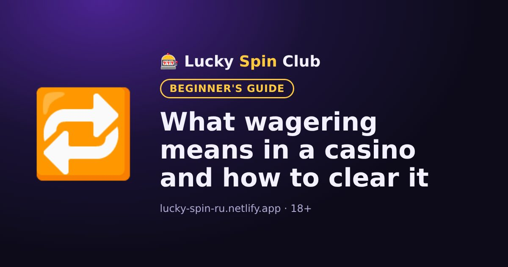

What wagering means in a casino and how to clear it

Almost every casino bonus comes with a wagering requirement. If you do not understand it in advance, the bonus is easy to lose. Here it is with examples.
A simple definition
Wagering shows how many times you must bet the bonus amount before the bonus money becomes real money that can be withdrawn.
An example
You got a $100 bonus with x30 wagering. The total you need to bet is 100 × 30 = $3,000. This does not mean spending $3,000 of your own money: all bets count, including bets made with winnings.
Sometimes wagering is calculated on the bonus plus the deposit. Then with a $100 deposit and a $100 bonus at x30 you need to bet (100 + 100) × 30 = $6,000. The bonus terms say how it is calculated.
Game contribution
Games count differently. Slots often count 100%, while roulette, blackjack and live games count 0–20% or not at all. The list is in the bonus rules.
Rules to know
- Time limit. The bonus must be cleared within a set time, for example 7 or 30 days, or it expires.
- Maximum bet. While the bonus is active, your stake cannot exceed a limit. Breaking it can cancel the bonus and winnings.
- Maximum cashout. Some bonuses limit how much can be withdrawn after wagering.
Is the bonus worth it?
The lower the wagering and the longer the time limit, the easier the bonus is to clear. If the terms do not suit you, you can decline the bonus and play with your own money without restrictions.
Ready to try? Signing up takes about a minute.
🎁 Sign up and get the bonusFrequently asked questions
What does x35 wagering mean?
It means the bonus amount must be bet 35 times. For a $100 bonus, you need to place bets worth $3,500 in total.
Do all games count towards wagering?
No. Slots often count 100%, while table and live games count partly or not at all. The list is in the bonus rules.
What happens if I do not clear the bonus in time?
When the time limit runs out, the bonus and the winnings tied to it usually expire.